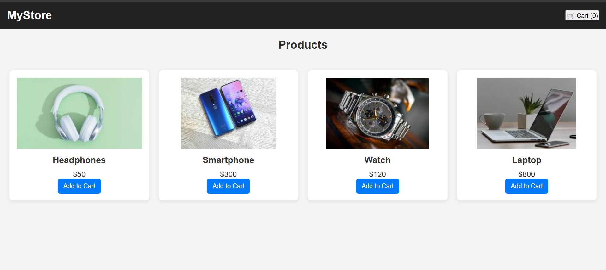

Projects
E-Commerce Product Page
I created a responsive E-Commerce Product Page using HTML, CSS and JavaScript. The page is designed to showcase products in a clean and attractive layout, making it easy for users to browse and explore. It includes a product image section, detailed product descriptions, price information, and an “Add to Cart” button for interactivity. With Bootstrap, I implemented a responsive grid system to ensure the layout adjusts smoothly across different devices. I also added hover effects and styling with CSS to make the page visually appealing. This project helped me strengthen my skills in front-end design, responsive layouts, and user-friendly interfaces, which are essential for real-world e-commerce applications.
My Portfolio

I created my personal Portfolio Website using HTML, CSS, and JavaScript to showcase my education, skills, and projects. It includes sections like Home, About, Skills, Projects, and Contact. The portfolio is fully responsive and designed with clean UI, helping visitors easily navigate through my work and background. This project enhanced my ability to build structured layouts and apply responsive design techniques.